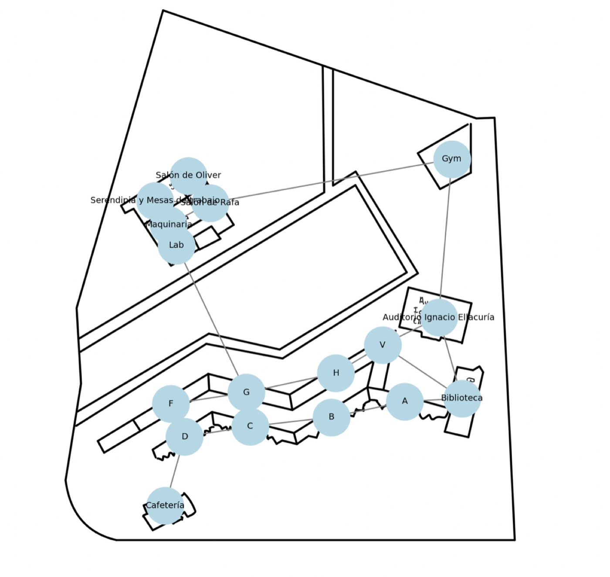

De que trata
Estructuras de datos disfrazadas de app de citas
La idea era practicar grafos con algo que diera risa en clase. WichoTinder tiene 15 perfiles de estudiantes con carrera, hobbies, edificio donde se les encuentra y foto. Eliges quien eres, la app te sugiere compañeros y cada vez que agregas a alguien se crea una amistad.
La gracia esta en que todo lo que se ve es una estructura de datos: el circulito de color al lado de cada perfil es la compatibilidad (si comparten hobby), la lista de amigos es una lista de adyacencia, y al final se dibuja el grafo completo en un canvas.
Grafo de amistades
Cada estudiante es un nodo
La clase Student guarda sus datos y una lista friends. Esa lista es literalmente la lista de adyacencia del grafo. Lo importante es que la amistad se agrega en los dos sentidos, porque el grafo es no dirigido.
// Cada estudiante es un NODO. Su lista "friends" es la lista de adyacencia.
class Student {
constructor(name, career, hobbies, building, age, image) {
this.name = name;
this.career = career;
this.hobbies = hobbies;
this.building = building;
this.age = age;
this.image = image;
this.friends = []; // <- aqui vive el grafo
}
addFriend(student) {
this.friends.push(student);
}
}
// Una amistad es una ARISTA NO DIRIGIDA: hay que agregarla en los dos sentidos,
// si no, A seria amigo de B pero B no de A.
function addFriend(name) {
const friend = students[name];
if (!selectedUser.friends.includes(friend)) selectedUser.addFriend(friend);
if (!friend.friends.includes(selectedUser)) friend.addFriend(selectedUser);
addedFriends.add(friend.name);
renderFriendCards(selectedUser.name);
saveState(); // se guarda en localStorage para no perder el grafo
}
Visualizacion
Dibujar el grafo con canvas
Cuando terminas de agregar amigos, el boton Finalizar dibuja el grafo: tu nodo al centro y los amigos repartidos en circulo usando seno y coseno para calcular donde va cada uno.
JavaScript · Canvas// Dibuja el grafo del usuario: el nodo central es el, alrededor sus amigos.
function drawGraph() {
const ctx = canvas.getContext("2d");
const centerX = canvas.width / 2, centerY = canvas.height / 2;
const radius = 200;
// Los amigos se reparten en circulo: 360 grados entre el numero de amigos
const angleStep = (2 * Math.PI) / selectedUser.friends.length;
ctx.fillStyle = "#ba4b2f"; // nodo central
ctx.arc(centerX, centerY, 30, 0, Math.PI * 2);
ctx.fill();
selectedUser.friends.forEach((friend, index) => {
const angle = index * angleStep;
const x = centerX + radius * Math.cos(angle); // trigonometria para
const y = centerY + radius * Math.sin(angle); // colocar cada nodo
ctx.moveTo(centerX, centerY); // ARISTA
ctx.lineTo(x, y);
ctx.stroke();
ctx.fillStyle = "#4f9da6"; // NODO amigo
ctx.arc(x, y, 25, 0, Math.PI * 2);
ctx.fill();
ctx.fillText(friend.name, x, y + 5);
});
}
Pila
Busquedas recientes con un stack
En la pantalla Explore puedes buscar a un compañero. Cada busqueda se apila, y al pedir el historial se muestra al reves: lo ultimo que buscaste sale primero. Eso es una pila (LIFO) en su forma mas simple.
JavaScript · Pila// PILA (stack): las busquedas recientes salen en orden inverso al que entraron.
const searchStack = [];
function searchFriend() {
const name = document.getElementById("friendName").value.trim().toLowerCase();
const students = ["camila", "ximena", "daniel", "tomas", "jonathan", "wicho", ...];
if (students.includes(name)) {
searchStack.push(name); // PUSH: entra hasta arriba
resultDiv.innerHTML = `<p>${name} si esta en el campus.</p>`;
} else {
resultDiv.innerHTML = `<p>Amigo no encontrado.</p>`;
}
}
function showRecentSearches() {
// LIFO: se invierte para mostrar primero lo ultimo que se busco
resultDiv.innerHTML = searchStack.slice().reverse()
.map(name => `<li>${name}</li>`).join("");
}
Grafo del campus
17 lugares y 19 caminos, sobre el mapa real
La pantalla Campus muestra un grafo dibujado encima de la foto aerea de la Ibero: los nodos son lugares (Biblioteca, Cafeteria, Gym, los salones del IDIT) y las aristas son los caminos que de verdad se pueden recorrer a pie. Se genero con Python, NetworkX y matplotlib.

Python · NetworkXimport matplotlib.pyplot as plt
import networkx as nx
G = nx.Graph()
# Cada nodo es un lugar del campus, con su posicion real sobre el mapa
nodes = {
"Serendipia y Mesas de trabajo": (364, 725),
"Salon de Oliver": (483, 636),
"Salon de Rafa": (560, 733),
"Biblioteca": (1457, 1430),
"Cafeteria": (400, 1812),
"Gym": (1421, 577),
# ... 17 lugares en total
}
for name, (x, y) in nodes.items():
G.add_node(name, pos=(x, y))
# Cada arista es un camino que si se puede recorrer a pie
edges = [
("Serendipia y Mesas de trabajo", "Salon de Rafa"),
("Salon de Rafa", "Gym"),
("Gym", "Auditorio Ignacio Ellacuria"),
("D", "Cafeteria"),
# ... 19 conexiones
]
G.add_edges_from(edges)
# Se dibuja el grafo ENCIMA de la foto del campus
ax.imshow(img, extent=[0, img.shape[1], img.shape[0], 0])
nx.draw(G, nx.get_node_attributes(G, 'pos'), with_labels=True,
node_color='lightblue', node_size=900, edge_color='gray', ax=ax)